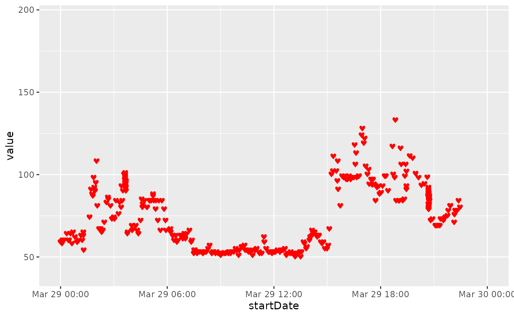
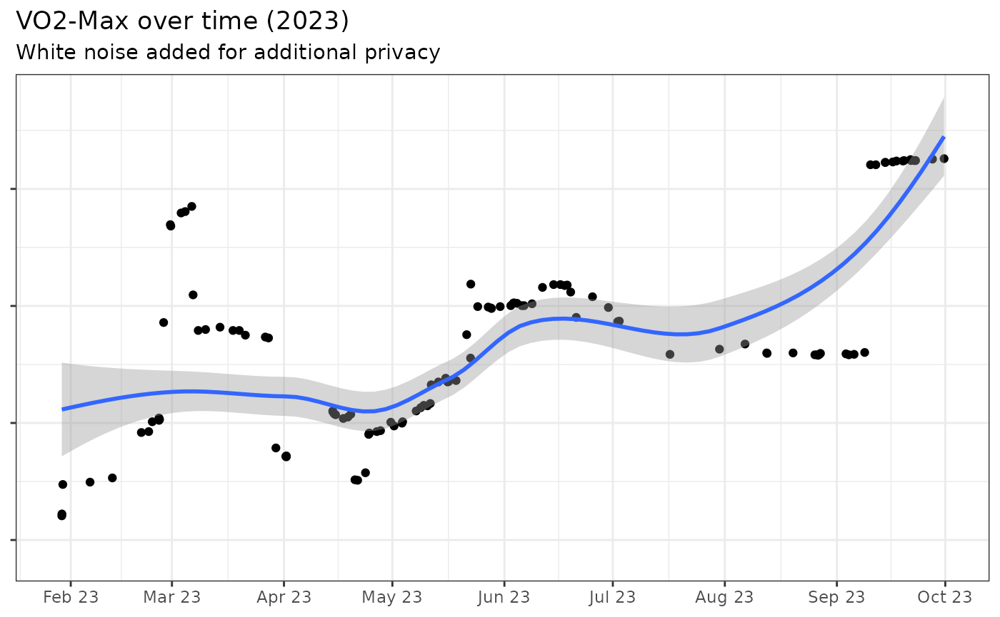
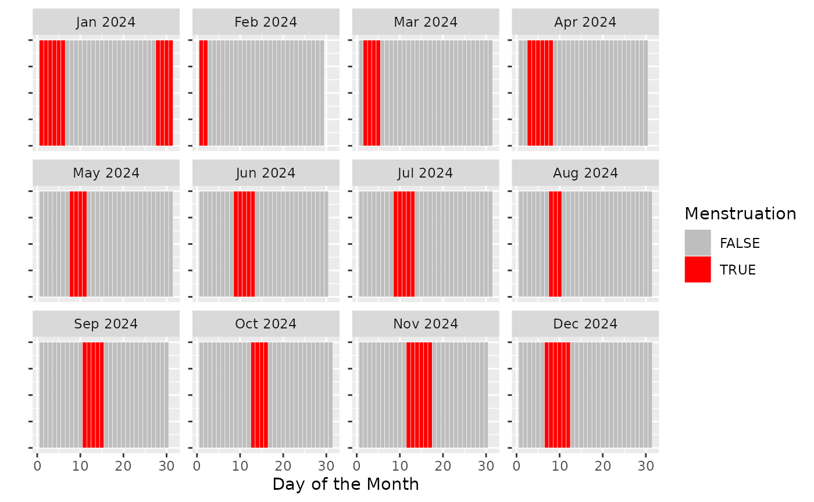

Analysing Health Data
parsed_healthdata <- read_rds("path/to/your/health_data.rds")The raw xml file exported by Apple contains several
dozens of variables, which are all exported as rows in a single
file.
## .
## HKQuantityTypeIdentifierActiveEnergyBurned
## 557636
## HKQuantityTypeIdentifierHeartRate
## 292203
## HKQuantityTypeIdentifierBasalEnergyBurned
## 253537
## HKQuantityTypeIdentifierDistanceWalkingRunning
## 118161
## HKQuantityTypeIdentifierDistanceCycling
## 88443
## HKQuantityTypeIdentifierStepCount
## 67271
## HKQuantityTypeIdentifierRespiratoryRate
## 25203
## HKQuantityTypeIdentifierWalkingSpeed
## 24331
## HKQuantityTypeIdentifierWalkingStepLength
## 24330
## HKCategoryTypeIdentifierSleepAnalysis
## 23878To better make sense and structure the data, this package proposes a number of domain-specific functions to analyse a specific health feature, such as cardiovascular data.
Analyse Heart Rate Data
The dedicated function for extracting and analysing cardiovascular
data is called get_cardio and takes as input an already
parsed healthdata object, or the raw zip file. Furthermore, the variable
var allows the user to pick which cardio-related variable
should be extracted, and currently takes as options
heartrate, resting,
walkingAverage, workout,
variability, and recovery.
hr_data <- get_cardio(health_db = parsed_healthdata,
var = "heartrate")
hr_data %>% select(type,sourceName,unit,startDate,value) %>% head()## # A tibble: 6 × 5
## type sourceName unit startDate value
## <chr> <chr> <chr> <dttm> <dbl>
## 1 HKQuantityTypeIdentifierHeartRate XXX ’s Appl… coun… 2022-03-28 05:55:33 69.9
## 2 HKQuantityTypeIdentifierHeartRate XXX ’s Appl… coun… 2022-03-28 05:56:57 68
## 3 HKQuantityTypeIdentifierHeartRate XXX ’s Appl… coun… 2022-03-28 05:53:48 70
## 4 HKQuantityTypeIdentifierHeartRate XXX ’s Appl… coun… 2022-03-28 05:58:41 66
## 5 HKQuantityTypeIdentifierHeartRate XXX ’s Appl… coun… 2022-03-28 06:05:40 60
## 6 HKQuantityTypeIdentifierHeartRate XXX ’s Appl… coun… 2022-03-28 06:10:28 61
library(ggplot2)
ggplot(hr_data,
aes(x = startDate, y = value)) +
geom_text(aes(label = "\u2665"), color = "red", size = 3) +
scale_x_datetime(limits = c(as.POSIXct("2022-03-29 00:00:00"),
as.POSIXct("2022-03-29 23:59:59")))
Analyse VO2-Max
Furthermore, the get_vo2max function obtains and the
VO2-Max performance data, either for the full available time range
(default), of for a specific start_date and
end_date.
vo2max_data <- get_vo2max(health_db = parsed_healthdata,
start_date = as_date("2023-01-01"),
end_date = as_date("2023-11-01"))We can now VO2-Max (with differential noise added for privacy reasons):
## # A tibble: 6 × 2
## startDate value
## <dttm> <dbl>
## 1 2023-01-01 15:59:15 38.3
## 2 2023-01-06 12:21:27 38.3
## 3 2023-01-06 22:37:49 38.3
## 4 2023-01-08 14:23:02 38.3
## 5 2023-01-13 19:47:48 38.3
## 6 2023-01-14 09:37:03 38.3Plot and smoothed trend overtime:
ggplot(private_vo2,
aes(x = startDate,
y = value)) +
geom_point() +
scale_x_datetime(limits = c(as.POSIXct("2023-01-29 00:00:00"),
as.POSIXct("2023-10-01 00:00:00")),
date_breaks = "1 month",
date_labels = "%b %y") +
geom_smooth() +
theme_bw() +
theme(axis.text.y = element_blank()) +
labs(x = NULL, y = NULL,
title = "VO2-Max over time (2023)",
subtitle = "White noise added for additional privacy")## `geom_smooth()` using method = 'loess' and formula = 'y ~ x'## Warning: Removed 27 rows containing non-finite values (`stat_smooth()`).## Warning: Removed 27 rows containing missing values (`geom_point()`).
Analyse Menstrual Cycle
menstruation_cycle_data <- get_menstruation_cycle(health_db = parsed_healthdata)Of course, female menstrual cycles are a sensitive piece of data,
which would not be appropriate to be exposed in this online
documentation. Instead of plotting someone’s actual cycle data, we
therefore simulate random data in a similar format as they would be
exported by the get_menstruation_cycle function of the
package.
set.seed(12345) # for reproducibility
# Function to simulate a single cycle
simulate_cycle <- function(start_date) {
cycle_length <- sample(25:35, 1) # Random cycle length between 25 and 35 days
menstruation_length <- sample(3:6, 1) # Random menstruation length between 3 and 7 days
data.frame(
Date = seq.Date(start_date, by = "day", length.out = cycle_length),
Menstruation = c(rep(TRUE, menstruation_length), rep(FALSE, cycle_length - menstruation_length))
)
}
# Simulate cycles for a year
simulate_year_cycles <- function(start_date, end_date) {
current_date <- start_date
all_cycles <- data.frame(Date = as.Date(character()), Menstruation = logical())
while(current_date < end_date) {
cycle <- simulate_cycle(current_date)
all_cycles <- bind_rows(all_cycles, cycle)
current_date <- max(cycle$Date) + 1
}
all_cycles %>% filter(Date <= end_date)
}
# Use the function to simulate cycles between two dates
start_date <- as.Date("2024-01-01")
end_date <- as.Date("2024-12-31")
simulated_menstrual_data <- simulate_year_cycles(start_date, end_date)
# Viewing the first 10 rows
simulated_menstrual_data %>% slice(25:35)## Date Menstruation
## 1 2024-01-25 FALSE
## 2 2024-01-26 FALSE
## 3 2024-01-27 FALSE
## 4 2024-01-28 TRUE
## 5 2024-01-29 TRUE
## 6 2024-01-30 TRUE
## 7 2024-01-31 TRUE
## 8 2024-02-01 TRUE
## 9 2024-02-02 TRUE
## 10 2024-02-03 FALSE
## 11 2024-02-04 FALSE
simulated_menstrual_data %>%
mutate(Month = floor_date(Date, "month"),
Day = day(Date)) %>%
ggplot(aes(x = Day, y = 1,fill = Menstruation)) +
geom_tile(color = "white") + # Use tiles
scale_fill_manual(values = c("TRUE" = "red", "FALSE" = "grey")) +
facet_wrap(~Month, scales = "free_y",
labeller = labeller(Month = function(x) format(as.Date(as.character(x), "%Y-%m-%d"), "%b %Y"))) + # Custom labels
labs(fill = "Menstruation", x = "Day of the Month", y = "") +
theme(axis.text.y = element_blank(),
strip.text.y = element_text(angle = 0)) 